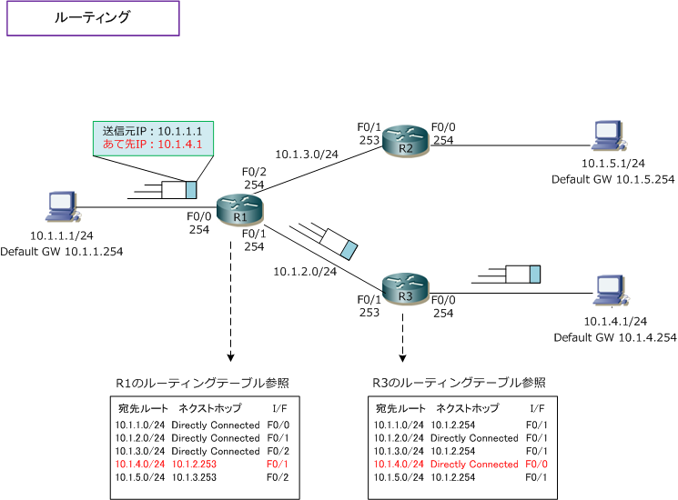
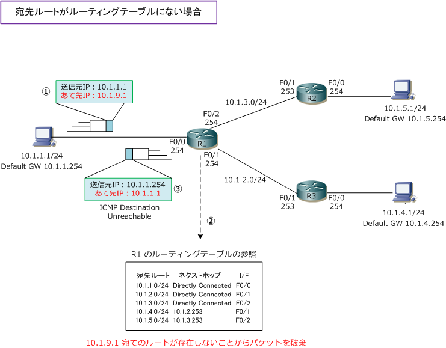
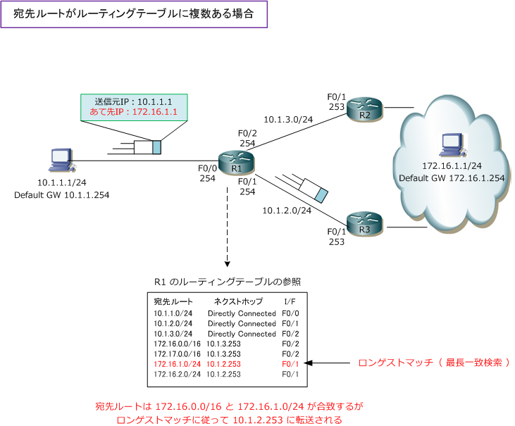

Routing
ルーティングとは
ルーティングとは、宛先となるホストまでパケットを送信する時に最適な経路を選択して転送することです。 このルーティングは、ルータやL3スイッチなどのレイヤ3で動作するネットワーク機器によって行われます。 ルータは最適な経路を決定するためにルーティングテーブルを参照します。ルーティングテーブルは、受信 したパケットをどこへ転送するべきかを決定するための宛先ルートの一覧情報です。重要な点は、ルータは ルーティングテーブルを参照し、ルーティングの際に受信パケットの宛先アドレスを見て転送していること。

上図で10.1.1.1から10.1.4.1宛てのパケットをR1が受信すると、パケットの宛先IPアドレスを見ます。次に 自身のルーティングテーブルを参照します。「10.1.4.1」は「10.1.4.0/24」のネットワークに該当するので R1はルーティングテーブルに従い、F0/1のI/Fから「10.1.2.253」のIPアドレスを持つ機器（R3）に対して パケットを転送します。パケットを受信したR3はパケットの宛先IPアドレスを見ます。次に、ルーティング テーブルを参照します。10.1.4.1は自身のI/FのネットワークなのでARP情報に基づきパケットを転送します。
ネクストホップとは受信したパケットを宛先ネットワークに転送するために次にパケットを転送する隣接ルータのIPアドレスのこと。 ネクストホップがDirectly Connectedの場合、自分自身のインターフェースが直接そのネットワークに接続している事を意味します。
ルーティングの原則 その1
ルータは、ルーティングテーブル上には存在しない宛先ネットワークあてのパケットは破棄してしまいます。 パケット破棄の後、ルータはパケットの送信元へ宛先到達不能（Destination Unreachable）メッセージを ICMPパケットで通知します。そのため、通信に必要な宛先ネットワークの経路情報はルーティングテーブル に保持している必要があります。下図は、10.1.1.1から10.1.9.1宛てのパケットを送信した所、10.1.9.1の 宛先ネットワークがルーティングテーブルにないことから、パケットを破棄しICMPで結果を通知しています。

ルーティングの原則 その2
受信パケットの宛先IPアドレスに該当するルート情報がルーティングテーブルに複数ある場合、そのルータは ロンゲストマッチの法則に従いパケットを転送します。ロンゲストマッチとはパケットを転送するための宛先 ネットワークがルーティングテーブルに複数ある時、宛先ネットワークのアドレスビット(プレフィックス長) が最も長く一致する宛先ルートをパケットの転送先として選択するルールのことです。下図の説明どおりです。

上図の「172.16.1.1」宛てのパケットが「172.16.0.0/16」と「172.16.1.0/24」両方の宛先ネットワーク に該当する場合、宛先ネットワークのアドレスのビットが最も長く一致しているのは「/24」まで合致している 172.16.1.0/24 であるので、ルータはF0/1のインターフェースから 10.1.2.253 のルータにパケットを転送。
ルーティングでは、複数の宛先ルートがある場合、色々な基準により最適ルートを選択することになりますが ロンゲストマッチが最適経路の選択に最優先されます。アドミニストレーティブディスタンス、メトリックは この次に考えられる値です。ロンゲストマッチの法則は、ネットワークエンジニアにとってとても大切な知識。